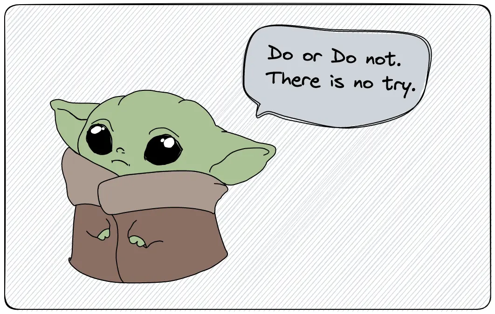

Software Engineer Interview Learning Resources

Contents
Download my system design playbook for free on newsletter signup:
Task List
- API Design
- Database
System Design Interview
- Designing Data-Intensive Applications by Martin Kleppmann
- Hacking the System Design Interview by Stanley Chiang
Coding Interview
- Cracking the Coding Interview by Gayle Laakmann McDowell
- Elements of Programming Interviews by Adnan Aziz
- Programming Interviews Exposed by John Mongan
Behavioral Interview
- The No Asshole Rule by Robert I. Sutton PhD
- 60 Seconds and You’re Hired! by Robin Ryan
Object Oriented Programming
- Head First Object-Oriented Analysis and Design by Dave West
Concurrency
- Java Concurrency in Practice by Brian Goetz
- Concurrency in Go by Katherine Cox-Buday
Distributed Systems
- Understanding Distributed Systems by Roberto Vitillo
- Distributed Systems by Maarten van Steen
Site Reliability Engineering
- Building Secure and Reliable Systems by Betsy Beyer
- The Site Reliability Workbook by Stephen Thorne
- Site Reliability Engineering by Chris Jones
Salary Negotiation
- Never Split the Difference by Chris Voss
Download my system design playbook for free on newsletter signup: